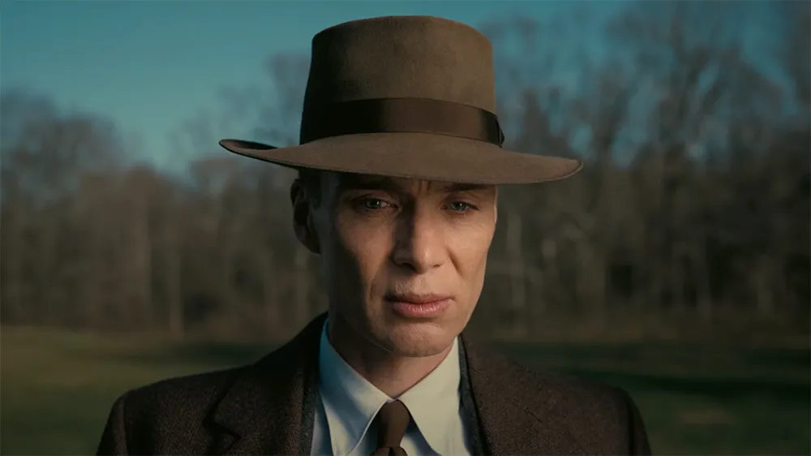
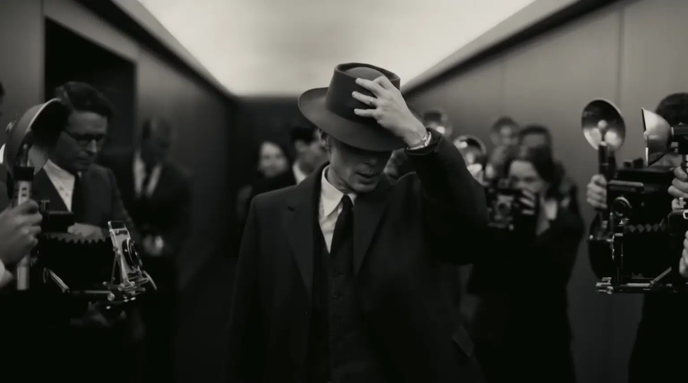

Je suis devenu la mort...
Une réplique mémorable d’Oppenheimer
Une réflexion éthique et morale
La phrase emblématique du film "Oppenheimer" (2023) de Christopher Nolan, "Je suis devenue la mort, le destructeur de mondes," reflète les dilemmes moraux liés à la création de la bombe atomique. Cette réplique poignante illustre le poids de la responsabilité et les conséquences profondes des actions scientifiques. Elle incite à la réflexion sur la science, le pouvoir et la moralité, tout en démontrant le génie narratif de Nolan. Une phrase qui restera gravée dans la mémoire des spectateurs, suscitant la méditation sur les implications éthiques de la technologie.
Image moment du film
La force de cette réplique réside dans sa capacité à susciter une réflexion approfondie sur la science, le pouvoir et l’éthique. Non seulement c’est une expression accrocheuse, mais elle sert également de catalyseur aux discussions intellectuelles sur les implications éthiques de la technologie. Il encourage le public à remettre profondément en question les actions des scientifiques et des innovateurs, en soulignant que chaque avancée technologique s'accompagne de choix éthiques décisifs

Image moment du film
Une réplique iconique ?
Cette réplique, par sa profondeur et sa signification, est destinée à rester ancrée dans la mémoire du public bien après la projection du film. Elle va au-delà de l'écran pour devenir une icône culturelle, déclenchant des débats et des réflexions sur les implications éthiques de chaque avancée scientifique. Elle rappelle au public que derrière chaque découverte scientifique significative se cachent des décisions cruciales et des dilemmes moraux qui méritent d'être explorés et débattus.
Image moment du film
Cette phrase deviendra certainement une icône culturelle, suscitant des discussions et une réflexion sur les implications éthiques de la technologie de chaque avancée scientifique. Elle rappelle au public que derrière chaque avancée scientifique majeure se cachent des choix importants et des dilemmes éthiques.
Résumé
Dans l’ensemble, cette ligne transcende son rôle dans le film pour devenir le point de départ d’une réflexion plus large sur les liens complexes entre sciences, pouvoir et éthique. Il illustre le génie narrateur de Christopher Nolan, capable de captiver l’esprit tout en provoquant une profonde réflexion sur le chemin moral que l’humanité choisit de suivre à l’ère de la technologie.